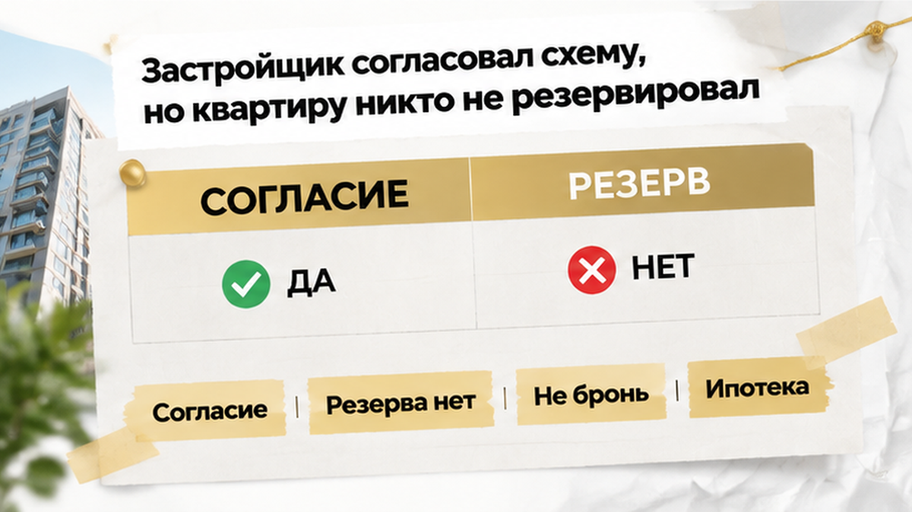
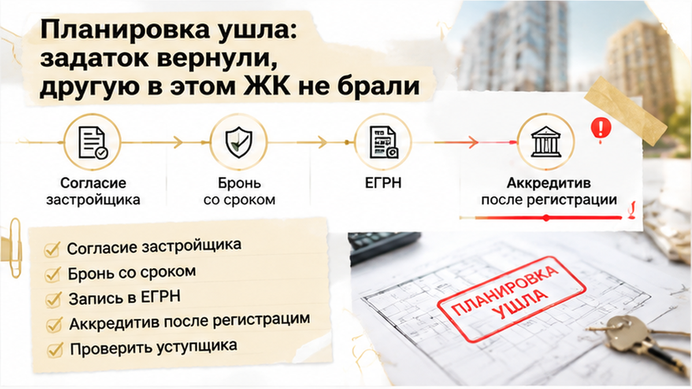

В Тюмени семья получила письменное согласие на переуступку в строящемся ЖК, подготовила ипотеку и договор, а за сутки до аванса узнала: квартиру уже закрепили за другим покупателем. К этому моменту уступщик получил задаток, банк предварительно одобрил схему, а застройщик подтвердил, что такую передачу прав провести можно. Оставалось перейти к расчёту — отдельного письменного резерва конкретного лота за семьёй не было. Разрешение оказалось действительным, только оно отвечало на один вопрос: допустима ли переуступка по ДДУ, — и не обещало удерживать квартиру до сделки.
Я Святослав Шакин, The Риэлтор, Тюмень. Разбираю сделки с новостройками простым языком: где покупатель уже защищён документами, а где пока опирается на слово «согласовано». Такие разборы публикую в Telegram и MAX.
За три недели до срыва семья выбрала квартиру по переуступке в строящемся тюменском ЖК. Покупали не готовое жильё у застройщика, а права первого участника строительства по ДДУ — договору, по которому застройщик должен передать квартиру. Продавца этих прав называют уступщиком: он выходит из договора, а новый покупатель занимает его место. Поэтому нужно было договориться не только о цене и дне расчёта, и проверить условия исходного ДДУ, и подготовить сам переход прав.
За двенадцать дней до планового аванса семья передала уступщику задаток по предварительной договорённости. Это был не аванс по договору переуступки, который стороны ещё готовили к подписанию. Разница здесь не формальная: у каждого платежа свой документ и свои условия. По самому факту передачи денег нельзя понять, что именно обещал уступщик и как долго квартира должна была оставаться за покупателями.
За десять дней до назначенного аванса банк предварительно одобрил ипотеку под схему переуступки. Для семьи это был ещё один пройденный этап — банк в принципе готов был рассматривать такую покупку. Само одобрение квартиру не закрепляет и действует в пределах срока, установленного банком. Похожее разделение видно в истории, где семейную ипотеку одобрили, а эскроу не открыли: один положительный ответ не заменяет остальные необходимые действия.

Следующий вопрос решали через офис продаж. Уступщик направил запрос застройщику, поскольку в исходном ДДУ было условие о согласии на переуступку. Пропустить этот шаг стороны не могли. За семь–четыре дня до аванса письменное согласие получили — вместо устного ответа у семьи появился документ, и ощущение, что сделка почти готова, выглядело вполне объяснимым.
Только документ отвечал на один конкретный вопрос: допускает ли застройщик переуступку по этому ДДУ. Другой вопрос оставался открытым — закреплена ли конкретная квартира именно за этой семьёй до завершения оформления. Согласие на переуступку и резерв квартиры — разные действия. Отдельного письменного закрепления лота за покупателями не было, хотя ипотеку и договор уже готовили.
Я бы отдельно остановился на слове «согласовали». В разговоре оно звучит шире, чем написано в бумаге: покупатель слышит «можно готовить деньги», а документ может означать лишь «это условие ДДУ выполнено». В разборе смены юридического лица застройщика и нового ДДУ важен тот же принцип — смотреть, какой именно вопрос закрывает каждый документ, а не складывать все положительные ответы в одно общее «квартира наша».
В этой сделке разрешение получили, а срок, в течение которого объект должны были удерживать за семьёй, отдельно не закрепили.
За три дня до намеченного аванса семья согласовала проект договора переуступки. Письменное согласие застройщика уже было, предварительное одобрение ипотеки тоже — подготовка дошла до денег. Основной перевод уступщику планировали на следующий рабочий день, и на такой стадии легко решить, что выбор квартиры закончен: осталось только провести расчёт и оформить переход прав.
За 24 часа до перевода позвонил менеджер застройщика и сообщил: квартира уже закреплена за другим покупателем. Тот быстрее прошёл внутреннюю процедуру бронирования и аванса. Для семьи, которая готовила свой платёж к следующему рабочему дню, это означало остановку сделки — не перенос встречи и не просьбу донести ещё одну справку. Выбранный объект больше не был закреплён за ними.
Сообщение «закреплена за другим» само по себе не означает, что переход прав к этому покупателю уже зарегистрирован. Это информация о внутреннем статусе квартиры у застройщика, а не запись в ЕГРН. Для семьи, однако, разница уже не спасала покупку: их переуступка не состоялась.
На вопрос «можно ли провести переуступку по этому ДДУ?» семья получила письменное «да». Отдельного подтверждения «этот объект закреплён за вами до такой-то даты» не было. Согласие касалось допустимости сделки, а не удержания квартиры на время, пока покупатели готовили ипотеку и расчёт. Называть случившееся двойной продажей со стороны уступщика или нарушением закона со стороны застройщика оснований нет — для этого нужны условия предварительной договорённости и документы о внутреннем закреплении объекта.
После остановки сделки уступщик полностью вернул семье задаток — спорить о том, чтобы удержать деньги, не пришлось. Аванс по договору переуступки покупатели не переводили. Его только готовили к назначенному рабочему дню, поэтому возвращать этот платёж не потребовалось. Задаток и будущий аванс — разные платежи: у каждого свой документ и свои условия. Если смешать их в одну историю о «внесённых деньгах», получится неверная картина сделки.
Денежный вопрос между семьёй и уступщиком закрылся, а квартира — нет. Под выбранную планировку уже готовили ипотеку, и предварительное одобрение действовало в установленный банком срок. Если за этот период не найти другой объект, одобрение может закончиться — это возможный риск, а не уже случившийся отказ банка.
Отдельно я разбирал, как ипотечные условия могут сорвать покупку накануне подписания. Здесь причина была другой: ставку банк не менял, просто выбранный объект раньше закрепили за другим покупателем.
Покупки взамен не получилось. Ту же планировку повторно закрепить не удалось, а другую квартиру в этом ЖК семья не купила. Задаток вернули полностью, аванс по цессии не переводили, и всё же конкретный объект был потерян, а намеченные сроки сорвались. Поэтому такой финал нельзя назвать удачным лишь потому, что деньги остались у покупателя: семья готовилась купить квартиру, а не просто вернуть свой платёж.
Переуступку согласовали, аванс готовили — а квартиру отдали другому за сутки. В такой ситуации вы бы винили уступщика, застройщика или себя за то, что поверили слову «согласовано»?
В этой истории слово «согласовали» создало ощущение, будто главный вопрос уже закрыт. На деле застройщик разрешил провести уступку, а отдельного подтверждения, что конкретный лот удерживают за семьёй до регистрации, не появилось. Здесь нужно разделять три ответа: переуступка допустима, объект закреплён на определённый срок, права перешли к новому дольщику. Каждый ответ относится к своему этапу — один нельзя подставлять вместо другого.
При переуступке покупают не готовую квартиру у застройщика, а права первого участника строительства по ДДУ — договору, по которому застройщик должен передать жильё. Пока уступка не зарегистрирована, новый покупатель участником этого договора не стал. Внутренняя бронь может удерживать объект на оговорённых условиях, однако сама по себе не передаёт права и не заменяет запись в ЕГРН.
Согласие застройщика нужно не при каждой переуступке. В этой сделке соответствующий пункт был в ДДУ, поэтому письменное разрешение действительно требовалось. Если договор полностью оплачен и такого условия в нём нет, отдельное согласие может не понадобиться. Когда вместе с правами передают непогашенный долг, появляется вопрос его перевода. А при залоге прав первого дольщика может потребоваться согласие банка.
До подготовки основного платежа я бы собрал рядом все документы и только потом переходил к расчётам. Устное «всё хорошо» от каждого участника не показывает, кто именно держит объект и на какой срок. В письменном статусе лота должны быть указаны покупатель и дата окончания закрепления. В договорённости с уступщиком — его обязательство не вести параллельную продажу в этот период.
| Какое «да» получили | Что оно подтверждает | Что проверить письменно |
|---|---|---|
| Согласие застройщика | Уступка допустима по условиям этого ДДУ. Само по себе квартиру за покупателем не резервирует. | К какому ДДУ относится согласие, выполнены ли его условия, требуется ли отдельное согласие банка. |
| Внутренняя бронь у девелопера | Объект коммерчески закреплён на согласованных условиях. Это ещё не переход прав. | Конкретный лот, покупатель, срок, сумма, основания снятия брони и последствия. Уступщик отдельно подтверждает условия эксклюзивности. |
| Госрегистрация уступки | Права перешли к новому дольщику, переход отражён в ЕГРН. | Запись о регистрации и документы, по которым банк сможет раскрыть аккредитив уступщику. |

Задаток уступщику, основной платёж по цессии и деньги застройщику по исходному ДДУ — разные потоки. Для расчёта с уступщиком можно использовать аккредитив с раскрытием после регистрации уступки. Он отвечает за выдачу денег, а не за бронь объекта: сам по себе аккредитив не заставляет застройщика держать квартиру до регистрации.
В разборе переноса ключей и эскроу в новостройке Тюмени хорошо видно, почему деньги и права нельзя складывать в одну папку с названием «сделка согласована». У каждого этапа свой документ и свой смысл.
Разбираю такие развилки в новостройках Тюмени в Telegram и MAX. Подписывайтесь, если хотите понимать, какой документ действительно позволяет переходить к следующему этапу сделки.
Перед следующей переуступкой порядок лучше выстроить заранее: сначала получить письменное закрепление конкретного лота со сроком до регистрации цессии и обязательствами уступщика, потом согласовать расчёт через аккредитив с раскрытием после записи в ЕГРН. Если вместо этих условий предлагают ещё раз поверить слову «согласовали», подготовку перевода можно остановить до ясного ответа.
Отказываться от подходящей новостройки только из-за формы сделки не нужно. Я бы лишь не отдавал сроки на усмотрение устного обещания: кто держит объект, сколько держит и когда получает деньги, должно быть понятно до платежа. Согласие застройщика остаётся согласием, бронь проверяется как бронь, а переход прав подтверждается регистрацией. Тогда решение принимается по документам, а не после обнадёживающего звонка.